Snakes of Peru
219 living snake species are recorded in Peru in SnakeList: 41 venomous and 178 non-venomous, from 9 families.
- 219living species
- 41venomous
- 178non-venomous
- 9families
These totals count the unique living snake species SnakeList records in Peru. A species counts if it is recorded anywhere in the country, so not every snake lives in every part of it.
Species
Showing 219 species
 Aesculapian False Coral SnakeErythrolamprus aesculapii
Aesculapian False Coral SnakeErythrolamprus aesculapii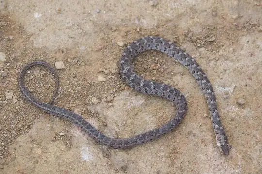
Almaden Ground SnakeErythrolamprus almadensis Amazon Banded SnakeRhinobothryum lentiginosum
Amazon Banded SnakeRhinobothryum lentiginosum Amazon Basin Tree SnakeImantodes lentiferus
Amazon Basin Tree SnakeImantodes lentiferus Amazon Coastal House SnakeThamnodynastes pallidus
Amazon Coastal House SnakeThamnodynastes pallidus Amazon Coral SnakeMicrurus spixii
Amazon Coral SnakeMicrurus spixii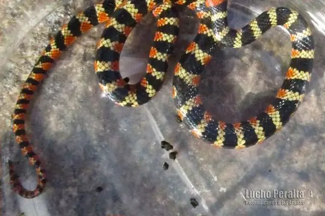
Amazon False Coral SnakeOxyrhopus rhombifer Amazon False Fer-de-lanceXenodon severus
Amazon False Fer-de-lanceXenodon severus Amazon Puffing SnakeSpilotes sulphureus
Amazon Puffing SnakeSpilotes sulphureus Amazon Tree BoaCorallus hortulana
Amazon Tree BoaCorallus hortulana Amazon Tropical Forest SnakeErythrolamprus pygmaeus
Amazon Tropical Forest SnakeErythrolamprus pygmaeus Amazon Water SnakeHydrops martii
Amazon Water SnakeHydrops martii Andean Blackback Coral SnakeMicrurus narduccii
Andean Blackback Coral SnakeMicrurus narduccii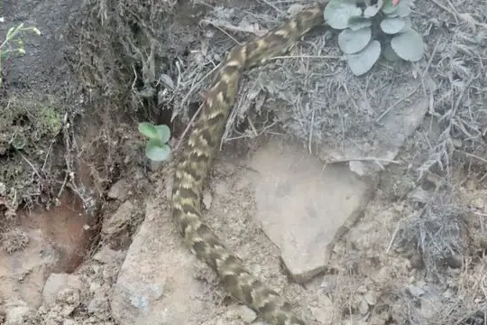
Andean LanceheadBothrocophias andianus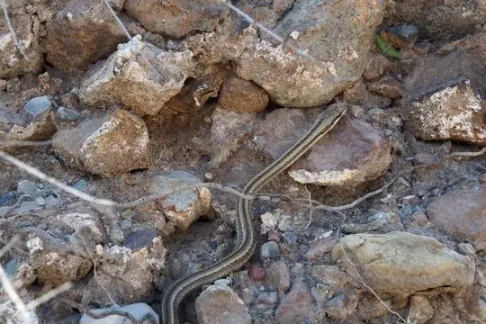
Andean RacerPseudalsophis elegans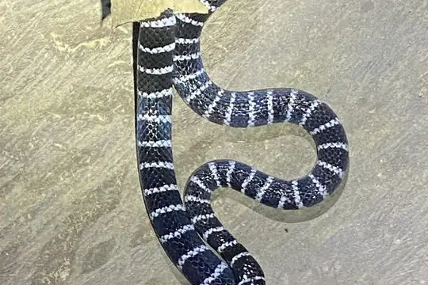
Annellated Coral SnakeMicrurus annellatus- No photo yetApurímac Woodland RacerDrymoluber apurimacensis
 Aquatic Coral SnakeMicrurus surinamensis
Aquatic Coral SnakeMicrurus surinamensis Banded Cat-eyed Snake (annulata)Leptodeira annulata
Banded Cat-eyed Snake (annulata)Leptodeira annulata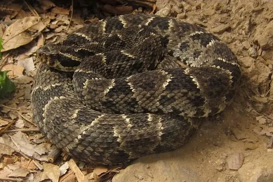
Barnett's LanceheadBothrops barnetti Basin Ground SnakeAtractus poeppigi
Basin Ground SnakeAtractus poeppigi- No photo yetBasin Worm SnakeAmerotyphlops minuisquamus
- No photo yetBassler's SnakeEutrachelophis bassleri
 Bates' Tree BoaCorallus batesii
Bates' Tree BoaCorallus batesii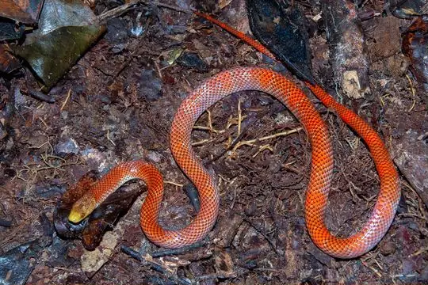
Beautiful Calico SnakeOxyrhopus formosus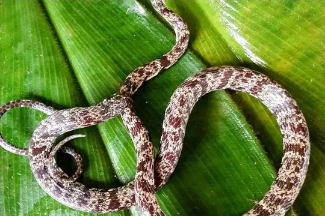
Bev Ridgely’s Snail-EaterSibon bevridgelyi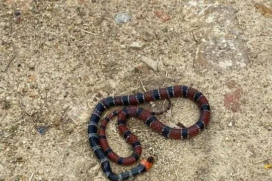
Bibron's False Coral SnakeOxyrhopus doliatus Big Ground SnakeAtractus major
Big Ground SnakeAtractus major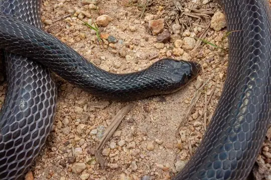
Black False BoaPseudoboa nigra Black Ground SnakeAtractus elaps
Black Ground SnakeAtractus elaps Black-collared SnakeDrepanoides anomalus
Black-collared SnakeDrepanoides anomalus- No photo yetBlack-headed Ground SnakeAtractus nigricauda
 Boa ConstrictorBoa constrictor
Boa ConstrictorBoa constrictor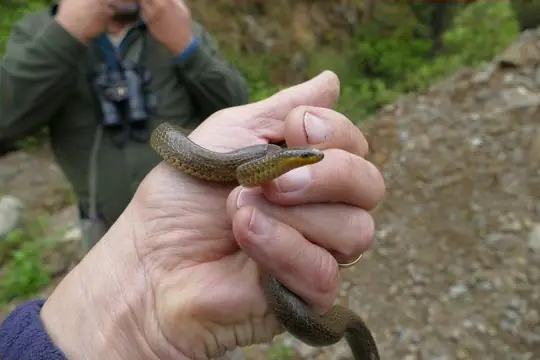
Bocourt's Ground SnakeAtractus bocourti Boddaert's Tropical RacerMastigodryas boddaerti
Boddaert's Tropical RacerMastigodryas boddaerti Boie's Ground SnakeAtractus badius
Boie's Ground SnakeAtractus badius- No photo yetBolivian Burrowing SnakeApostolepis dorbignyi
- No photo yetBolivian Coral Snake (obscurus)Micrurus obscurus
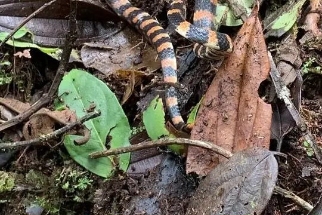
Boulenger's False Coral SnakeOxyrhopus marcapatae- No photo yetBoulenger's Slender SnakeTachymenis affinis
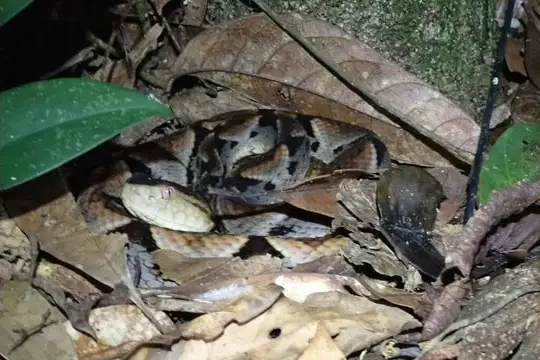
Brazil's LanceheadBothrops brazili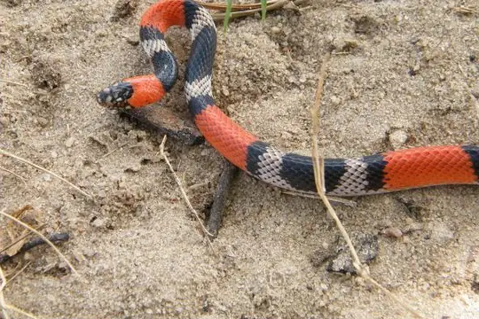
Brazilian False Coral SnakeOxyrhopus trigeminus Broadhead Ground SnakeAtractus latifrons
Broadhead Ground SnakeAtractus latifrons Brongersma's Worm SnakeAmerotyphlops brongersmianus
Brongersma's Worm SnakeAmerotyphlops brongersmianus Brown SipoChironius fuscus
Brown SipoChironius fuscus Brown VinesnakeOxybelis aeneus
Brown VinesnakeOxybelis aeneus BushmasterLachesis muta
BushmasterLachesis muta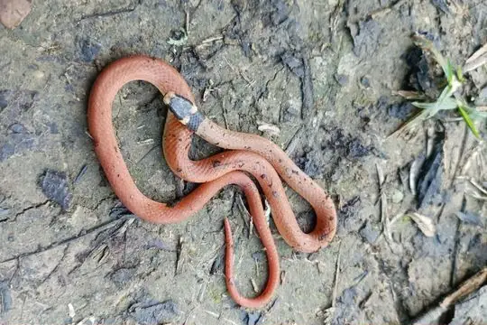
Capistrata Centipede SnakeTantilla capistrata Catesby's Snail-eaterDipsas catesbyi
Catesby's Snail-eaterDipsas catesbyi Central American Indigo SnakeDrymarchon melanurus
Central American Indigo SnakeDrymarchon melanurus Central Sipo (quadricarinatus)Chironius quadricarinatus
Central Sipo (quadricarinatus)Chironius quadricarinatus Coal SnakePseudoboa neuwiedii
Coal SnakePseudoboa neuwiedii Collared Ground SnakeAtractus collaris
Collared Ground SnakeAtractus collaris Common Green RacerChlorosoma viridissimum
Common Green RacerChlorosoma viridissimum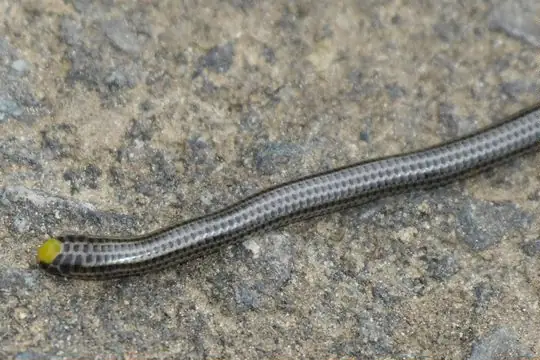
Common Peru Blind SnakeEpictia diaplocia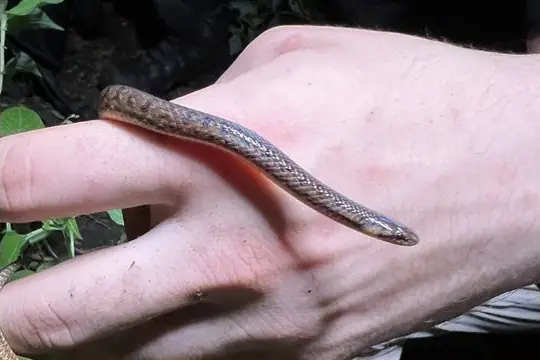
Cope's Ground SnakeAtractus microrhynchus Cope's Tropical RacerMastigodryas pulchriceps
Cope's Tropical RacerMastigodryas pulchriceps Copper Parrot SnakeLeptophis cupreus
Copper Parrot SnakeLeptophis cupreus Coral Cylinder SnakesAnilius scytale
Coral Cylinder SnakesAnilius scytale Crowned False BoaPseudoboa coronata
Crowned False BoaPseudoboa coronata- No photo yetDark Blind SnakeEpictia melanura
 Degenhardt's Scorpion-eating SnakeStenorrhina degenhardtii
Degenhardt's Scorpion-eating SnakeStenorrhina degenhardtii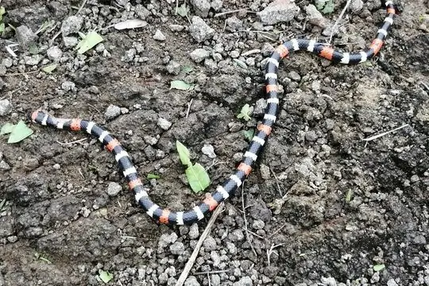
Desert Coral SnakeMicrurus tschudii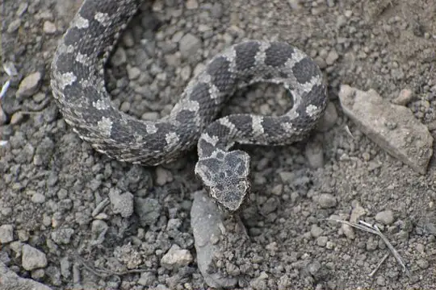
Desert LanceheadBothrops pictus Diurnal Vine SnakeXenoxybelis argenteus
Diurnal Vine SnakeXenoxybelis argenteus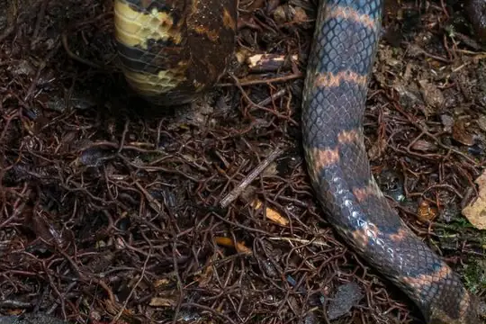
Drab Ground SnakeErythrolamprus festae- No photo yetDunn's Tree SnakeDipsas vagrans
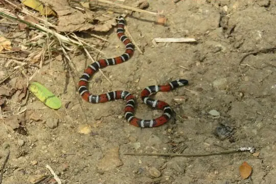
Ecuador Coral SnakeMicrurus bocourti Ecuador SipoChironius grandisquamis
Ecuador SipoChironius grandisquamis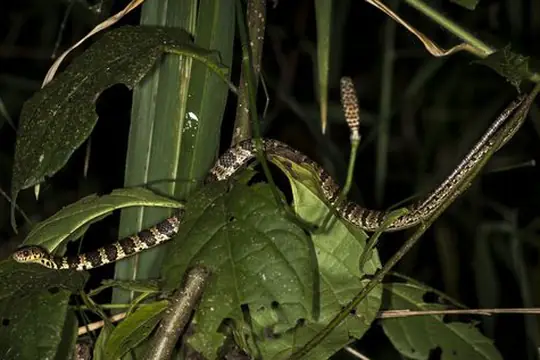
Ecuador Snail-eaterDipsas oreas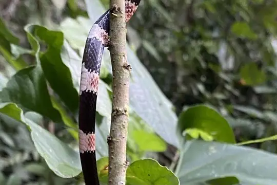
El Oro Snail EaterDipsas bobridgelyi Emerald Tree BoaCorallus caninus
Emerald Tree BoaCorallus caninus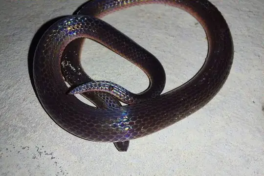
Emmel's Ground SnakeAtractus emmeli Equatorial MussuranaClelia equatoriana
Equatorial MussuranaClelia equatoriana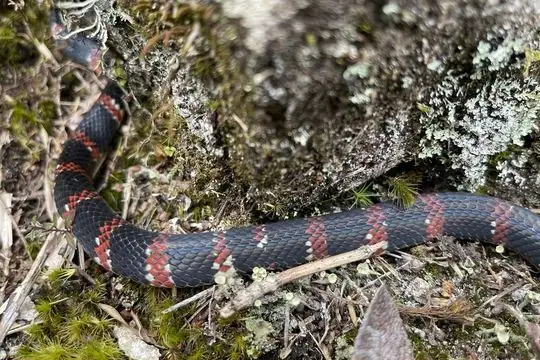
Erdis' False Coral SnakeOxyrhopus erdisii Fer-de-LanceBothrops atrox
Fer-de-LanceBothrops atrox Fiddle-string SnakeImantodes cenchoa
Fiddle-string SnakeImantodes cenchoa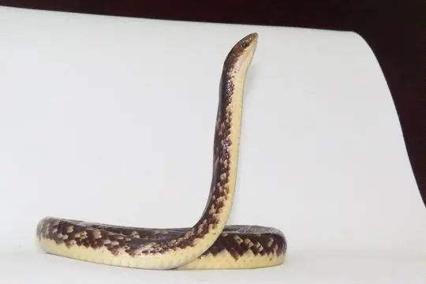
Fitzinger's False Coral SnakeOxyrhopus fitzingeri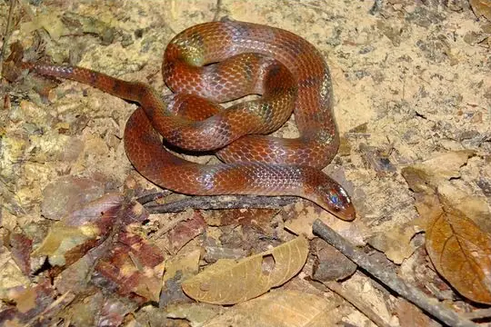
Flaming Ground SnakeAtractus flammigerus Forest RacerDendrophidion bivittatus
Forest RacerDendrophidion bivittatus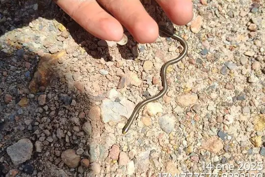
García's Blind SnakeEpictia antoniogarciai Green AnacondaEunectes murinus
Green AnacondaEunectes murinus Green JararacaBothrops bilineatus
Green JararacaBothrops bilineatus Grey Ground SnakeAtractus occipitoalbus
Grey Ground SnakeAtractus occipitoalbus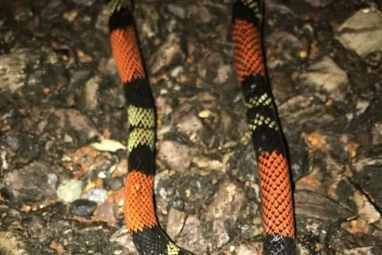
Guibe's Flame SnakeOxyrhopus guibei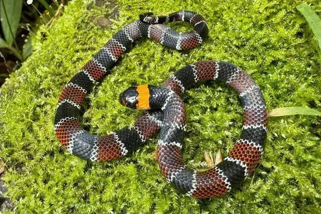
Günther's False Coral SnakeErythrolamprus guentheri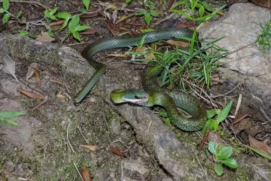
Günther's Forest RacerDendrophidion brunneum Hagmann's KeelbackHelicops hagmanni
Hagmann's KeelbackHelicops hagmanni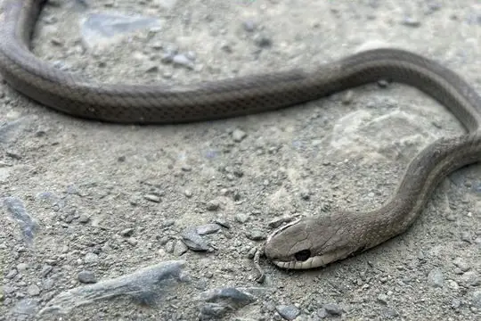
Heath's Tropical RacerMastigodryas heathii Hemprich's Coral SnakeMicrurus hemprichii
Hemprich's Coral SnakeMicrurus hemprichii- No photo yetHensel's SnakeDitaxodon taeniatus
 Hognose LanceheadBothrocophias hyoprora
Hognose LanceheadBothrocophias hyoprora Hudson's Coffee SnakeNinia hudsoni
Hudson's Coffee SnakeNinia hudsoni Impostor Flame-SnakeOxyrhopus vanidicus
Impostor Flame-SnakeOxyrhopus vanidicus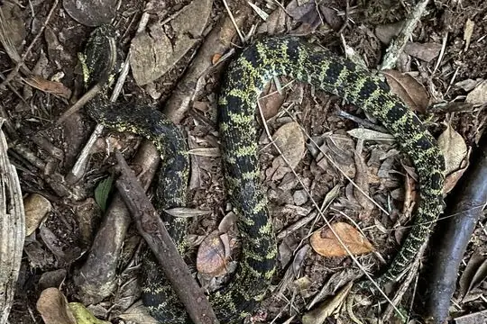
Inca Forest Pit Viper (chloromelas)Bothrops chloromelas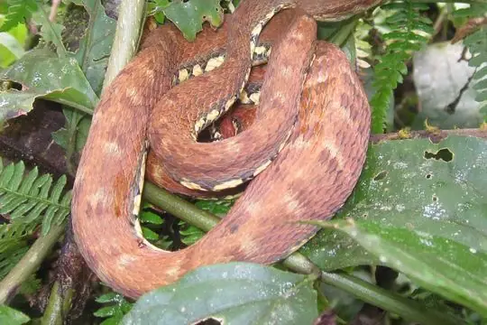
Inca Forest Pit Viper (oligolepis)Bothrops oligolepis Indigo SnakeDrymarchon corais
Indigo SnakeDrymarchon corais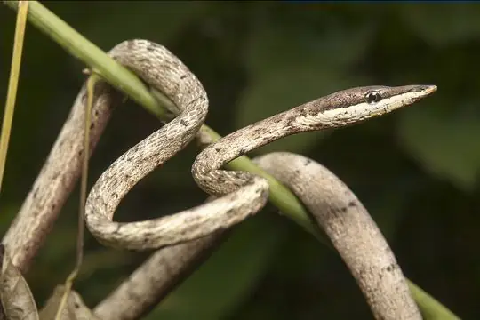
Inkaterra Vine SnakeOxybelis inkaterra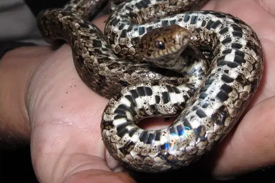
James Peters's Snail-eaterDipsas jamespetersi- No photo yetJan's Tree SnakeDipsas vagus
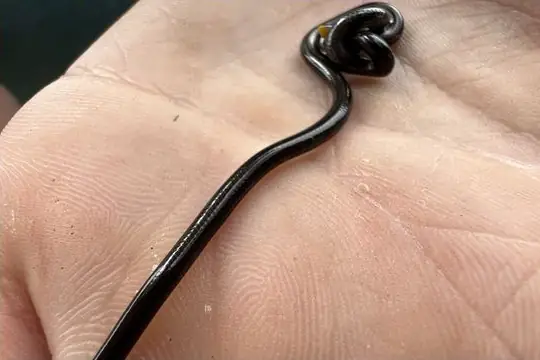
Klauber's Blind SnakeEpictia subcrotilla Langsdorff's Coral SnakeMicrurus langsdorffi
Langsdorff's Coral SnakeMicrurus langsdorffi Lichtenstein's Green RacerPhilodryas olfersii
Lichtenstein's Green RacerPhilodryas olfersii Linnaeus' SipoChironius exoletus
Linnaeus' SipoChironius exoletus- No photo yetLittle-scaled Ground SnakeAtractus pauciscutatus
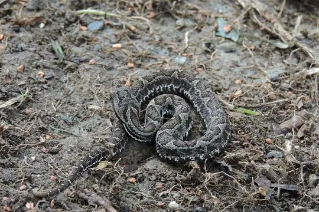
Lojan LanceheadBothrocophias lojanus- No photo yetLonely Spotbelly-SnakeConiophanes longinquus
 Mangrove SnakErythrolamprus cobella
Mangrove SnakErythrolamprus cobella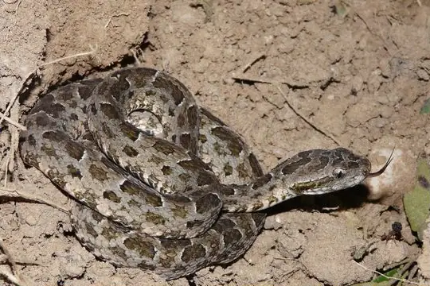
Mato Grosso LanceheadBothrops mattogrossensis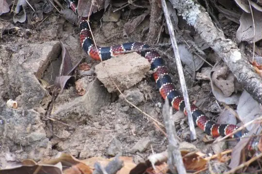
Mertens' Coral SnakeMicrurus mertensi Mexican Blind SnakeAnomalepis mexicana
Mexican Blind SnakeAnomalepis mexicana Military Ground SnakeErythrolamprus miliaris
Military Ground SnakeErythrolamprus miliaris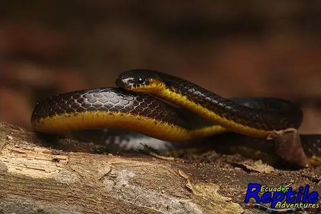
Modest Ground SnakeAtractus modestus Mountain KeelbackHelicops angulatus
Mountain KeelbackHelicops angulatus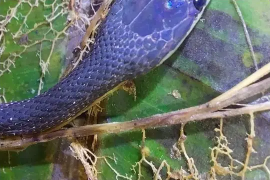
Mountain Shadow SnakeSynophis insulomontanus Mountain SipoChironius monticola
Mountain SipoChironius monticola Neckband Ground SnakeAtractus torquatus
Neckband Ground SnakeAtractus torquatus Neotropical Snail-eater (indica)Dipsas indica
Neotropical Snail-eater (indica)Dipsas indica Norman's KeelbackHelicops polylepis
Norman's KeelbackHelicops polylepis- No photo yetNortheastern Puffing SnakePhrynonax polylepis
 Northern Calico SnakeOxyrhopus occipitalis
Northern Calico SnakeOxyrhopus occipitalis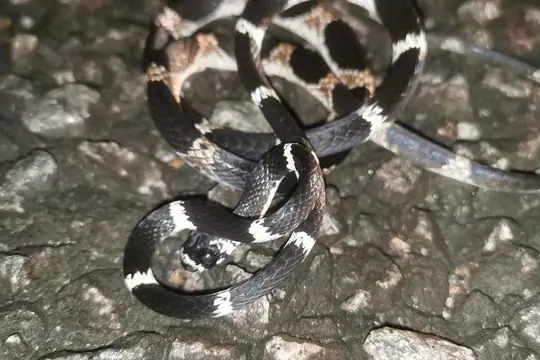
Northern Snail-eaterDipsas pavonina Northern Woodland RacerDrymoluber dichrous
Northern Woodland RacerDrymoluber dichrous- No photo yetO'Neill's Tree SnakeDipsas oneilli
 Olive Forest RacerDendrophidion dendrophis
Olive Forest RacerDendrophidion dendrophis Ornate CoralsnakeMicrurus ornatissimus
Ornate CoralsnakeMicrurus ornatissimus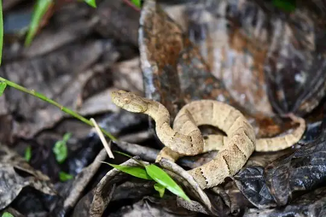
Osborne's LanceheadBothrops osbornei- No photo yetOswaldo Báez’ Snail-EaterDipsas oswaldobaezi
 Pachacamac Ground SnakeAtractus snethlageae
Pachacamac Ground SnakeAtractus snethlageae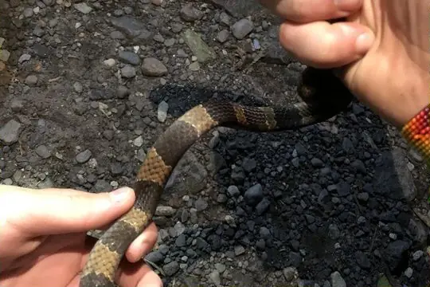
Palmer’s Snail-EaterDipsas palmeri Panama Spotted Night SnakeSiphlophis cervinus
Panama Spotted Night SnakeSiphlophis cervinus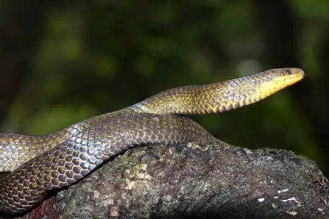
Parker's Ground SnakeAtractus carrioni Parrot SnakeLeptophis ahaetulla
Parrot SnakeLeptophis ahaetulla- No photo yetPeru Blind SnakeEpictia peruviana
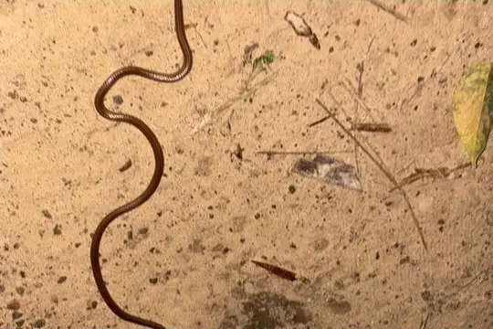
Peru Burrowing SnakeApostolepis nigroterminata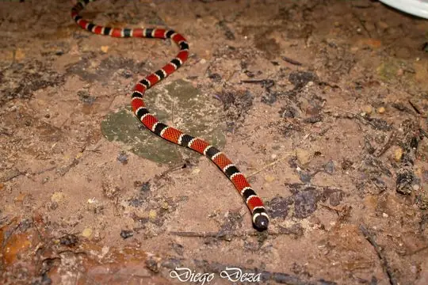
Peru Coral SnakeMicrurus peruvianus- No photo yetPeru Ground SnakeAtractus peruvianus
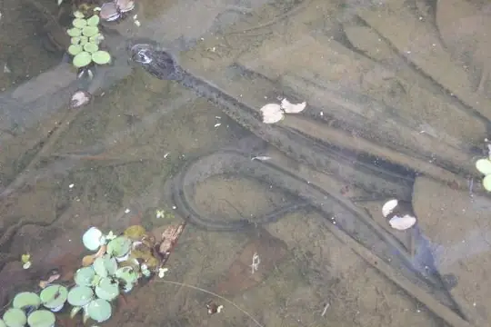
Peru KeelbackHelicops yacu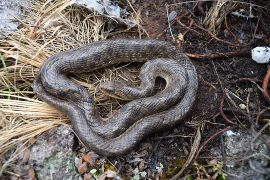
Peru Slender SnakeTachymenis peruviana Peru Snail-eaterDipsas peruana
Peru Snail-eaterDipsas peruana- Peruvian Cat-eyed SnakeLeptodeira larcorum
- Peters' Running SnakeConiophanes dromiciformis
 Pigmy Black-backed CoralsnakeMicrurus scutiventris
Pigmy Black-backed CoralsnakeMicrurus scutiventris- No photo yetProblem Ground SnakeArcanumophis problematicus
 Putumayo Coral SnakeMicrurus putumayensis
Putumayo Coral SnakeMicrurus putumayensis Rainbow BoaEpicrates cenchria
Rainbow BoaEpicrates cenchria- No photo yetRed-lined Blind SnakeEpictia rubrolineata
 Rio Tropical RacerPalusophis bifossatus
Rio Tropical RacerPalusophis bifossatus- Rose Blind SnakeEpictia rufidorsa
- Roule's Ground SnakeAtractus roulei
 Royal Ground SnakeErythrolamprus reginae
Royal Ground SnakeErythrolamprus reginae- Schmidt's Green RacerIncaspis tachymenoides
- Schunk's Snail-eaterDipsas schunkii
 Short Ground SnakeErythrolamprus breviceps
Short Ground SnakeErythrolamprus breviceps Short-nosed GroundsnakeTaeniophallus brevirostris
Short-nosed GroundsnakeTaeniophallus brevirostris Shreve's KeelbackHelicops pastazae
Shreve's KeelbackHelicops pastazae Shropshire's Puffing SnakePhrynonax shropshirei
Shropshire's Puffing SnakePhrynonax shropshirei- Simon's RacerIncaspis simonsii
 Sipo (carinatus)Chironius carinatus
Sipo (carinatus)Chironius carinatus Slender Coral SnakeMicrurus filiformis
Slender Coral SnakeMicrurus filiformis- No photo yetSlender SnakeTachymenis tarmensis
 Small-eyed ToadheadBothrocophias microphthalmus
Small-eyed ToadheadBothrocophias microphthalmus South American Coral SnakeMicrurus lemniscatus
South American Coral SnakeMicrurus lemniscatus South American Pond Snake (plicatilis)Pseudoeryx plicatilis
South American Pond Snake (plicatilis)Pseudoeryx plicatilis South American Sipo (multiventris)Chironius multiventris
South American Sipo (multiventris)Chironius multiventris- Southern Sharpnose SnakeXenoxybelis boulengeri
- No photo yetSpeckled Coral Snake (margaritiferus)Micrurus margaritiferus
 Speckled Forest Pit ViperBothrops taeniatus
Speckled Forest Pit ViperBothrops taeniatus- Steindachner's Coral SnakeMicrurus steindachneri
- Taczanowsky's Dwarf BoaTropidophis taczanowskyi
- No photo yetTaylor's Peru Blind SnakeAnomalepis aspinosus
- No photo yetTeague's Northern Blind SnakeEpictia teaguei
- Thin Ground SnakeErythrolamprus taeniurus
- Three-colored Blind SnakeEpictia tricolor
 Tikuna CoralsnakeMicrurus tikuna
Tikuna CoralsnakeMicrurus tikuna Triangle Water SnakeHydrops triangularis
Triangle Water SnakeHydrops triangularis Tropical Flat SnakeSiphlophis compressus
Tropical Flat SnakeSiphlophis compressus- Tschudi's Blind SnakeEpictia tesselata
 Tschudi's False Coral SnakeOxyrhopus melanogenys
Tschudi's False Coral SnakeOxyrhopus melanogenys Tucuman ThreadsnakeEpictia albipuncta
Tucuman ThreadsnakeEpictia albipuncta- Two-colored MussuranaMussurana bicolor
- Variegated Snail-eaterDipsas variegata
 Velvet SwampsnakeErythrolamprus typhlus
Velvet SwampsnakeErythrolamprus typhlus Vermiculate Snail-eaterDipsas vermiculata
Vermiculate Snail-eaterDipsas vermiculata- No photo yetVertebral Ground SnakeAtractus vertebralis
 Wagler's Blind SnakeEpictia albifrons
Wagler's Blind SnakeEpictia albifrons Wagler's SipoChironius scurrulus
Wagler's SipoChironius scurrulus- Welborn’s Snail-eating SnakeDipsas welborni
 Werner's False Coral SnakeOxyrhopus leucomelas
Werner's False Coral SnakeOxyrhopus leucomelas White-banded Coral SnakeMicrurus albicinctus
White-banded Coral SnakeMicrurus albicinctus- Williams' Tree SnakeDipsas williamsi
- Worontzow's Spotted Night SnakeSiphlophis worontzowi
 Wucherer's Ground SnakeXenopholis scalaris
Wucherer's Ground SnakeXenopholis scalaris- Yellow-bellied SnakeErythrolamprus poecilogyrus
 Yellow-headed SipoChironius leucometapus
Yellow-headed SipoChironius leucometapus Yellowbelly SnakeConiophanes fissidens
Yellowbelly SnakeConiophanes fissidens- No photo yetApostolepis collaris
- Atractus natans
 Atractus pachacamac
Atractus pachacamac- No photo yetAtractus paulus
- Bothrops monsignifer
- No photo yetBothrops sonene
- No photo yetEpictia alfredschmidti
- No photo yetEpictia septemlineata
- Epictia striatula
- No photo yetEpictia vanwallachi
- No photo yetEpictia venegasi
- Epictia vonmayi
- Erythrolamprus andinus
 Erythrolamprus dorsocorallinus
Erythrolamprus dorsocorallinus- No photo yetErythrolamprus epinephelus
- No photo yetErythrolamprus fraseri
- No photo yetErythrolamprus janaleeae
- Erythrolamprus oligolepis
 Erythrolamprus taeniogaster
Erythrolamprus taeniogaster- Mastigodryas reticulatus
- No photo yetTaeniophallus occipitalis
- No photo yetTantilla tjiasmantoi
 Thamnodynastes silvai
Thamnodynastes silvai
No snakes in Peru match.
Peru’s snakes in numbers
- Families: Colubridae 152, Elapidae 20, Leptotyphlopidae 18, Viperidae 17, Boidae 6, Anomalepididae 2, Typhlopidae 2, Aniliidae 1, Tropidophiidae 1.
- 39 are recorded in no other country or territory in SnakeList: Apurímac Woodland Racer, Barnett's Lancehead, Black-headed Ground Snake, Bocourt's Ground Snake, Boulenger's False Coral Snake, Boulenger's Slender Snake, Dark Blind Snake, Desert Lancehead, Dunn's Tree Snake, Erdis' False Coral Snake, García's Blind Snake, Inca Forest Pit Viper (chloromelas) and 27 more.
How precisely they are recorded
Of the 219 living species recorded in Peru, 108 are recorded by region in SnakeList’s data; 111 are recorded only for Peru as a whole, so the region pages list them as possible rather than recorded. SnakeList records each species by region, not by exact spot, so a species listed for a region may live in only part of it.
Regions
The regions where SnakeList records snakes, with how many living species are recorded in each. Each page has its species, venomous snakes, families, the species found only there, its cities and neighbours.
- Amazonas 10 species
- Áncash 1 species
- Apurímac 1 species
- Arequipa 2 species
- Ayacucho 3 species
- Cajamarca 6 species
- Cusco Departament 22 species
- Huanuco 10 species
- Ica 2 species
- Junín 2 species
- La Libertad 3 species
- Lambayeque 8 species
- Lima 9 species
- Loreto 59 species
- Madre de Dios 56 species
- Moquegua 3 species
- Pasco 10 species
- Piura 1 species
- Puno 2 species
- San Martín 35 species
- Tacna 1 species
- Ucayali 9 species
No place matches that.
Cities
Its biggest cities, biggest first. SnakeList records snakes by region, not by city, so each city page shows the species recorded in its region and, separately, those only possible there - not species confirmed in the city.